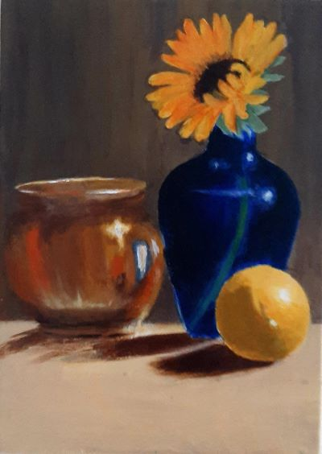

I get bored of things pretty easily, so I'm always looking for new activities to try out. As a result, I
have multiple pastimes. One of my favorite sources of entertainment is reading YA novels. I don't enjoy
movies as much, and although I am a picky reader, the thrill of books is something I always look forward
to whenever I visit my local library. Some of my favorite books are the Skyward series,
Undivided, and the Six of Crows duology.
Another hobby of mine is cooking. While I'm not the best cook out there, I love trying out new recipies
and cooking techniques. My "specialty" lies in stews and soups, but I also baking a simple cake from
time to time. Some of the things I've made include:
sweet and savory pies
quiches
biscuits
casseroles
Desi dishes
kababs
several kinds of pasta

A still life painting of vases and a lemon.
I also consider myself an "artsy" person. I love painting landscapes and still life. My
preferred painting medium is acrylic. I also enjoy sketching architechtural pieces. I've also tried my
hand at oil pastels, although I'm not very fond of the medium. I've also tried and failed to learn
crotchet, but I did get the hang of some basic knitting.
Favourite Animals
Although I spent most of my childhood in a large metropolitan city, I've always been a huge fan of
nature. I grew up in a desert climate where there was little greenery and visible animal life. I love
watching nature docummentaries in my free time and I've always wanted to visit the forests, savannahs
and mountains that I've watched about. One of my favorite groups of wild animals are wild cats of any
kind, although I do have a preference for cheetahs. I'm also enthusiatic about bears, horses, whales,
sharks and many more.
My favorite kinds of pets are cats. I also like talking birds, owls, horses, lambs,
chickens, ducks, geese, cows, goats, sheep, cats. I want to have a farm, grow my own flowers, have my
own honeybee hive and I'd like to enjoy my own fresh produce. But, I am lazy. I would need lots of money
to hire people to do all the work. I just want to enjoy my flowers and the company of my cows, sheep,
goats, barn cats, sheperd dogs, and horses.
Goals
I've always been the kind of person that looked forward to the future. I've always tried to have a rough
sketch of the path I intend to follow in my life. Before, it was mostly fantastical and perhaps overly
optimistic. I'd wanted to be writer for the longest time. The idea of creating my own story thrilled me
beyond words. However, I've developed a fear of writing, or more accurately a fear of repeatedly failing
to meet the expectations I had for a strong writer. I also found the likelihood of me succeding and
earning decent income using writing fairly small.
I then decided to delve into the Arts. I didn't have many other interests that I thought could earn me
money. And I also admit that I was slightly motivated by my laziness. Because while Arts may not be the
easiest field in college, I did consider it a very easy career path. I eventually gave up on Arts after
trying out some college Art courses and decided I'd rather keep Art as a hobby rather than an income
generator.
Later, I tried out Biology for a brief period as I really enjoyed taking the subject in highschool. But I
realized that it doesn't pay well unless you went into medical school, something I was determined to
steer clear of. I ended up in Software after finally giving in to my family's insistence, since it at
least paid well. It's also not as nearly as dull and boring as it might be, even though I do need to put
more effort into motivating myself to actually study and get my work done. Some of the reasons for
motivating myself are being able to earn money so that I can finally go on vacation with my whole
family, something we haven't been able to afford to do in a long time.